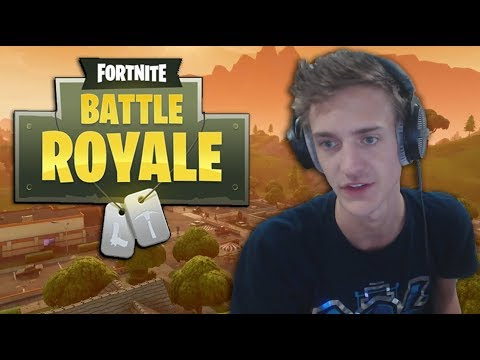

So uh... FORTNITE
Yes ladies and gentlemen... Fortnite is a massive multiplayer online video game released in July 2017, developed by Epic Games. The game includes two different game modes released as early access: Save the World and Battle Royale.
Fortnite Battle Royale is the free 100-player PvP mode in Fortnite. One giant map, a battle bus, Fortnite building skills and destructible environments combined with intense PvP combat while the last one standing wins; and Save the World is a cooperative shooter-survival game with up to 4-man squad to fight off husks and defend mission objectives with fortifications and defenses.
The avalability of the game:
It is avalable now on all consels.
Avalable on PC.
Also on mobile!
so uhhh why is it so famouse?.
- It's first because of the simple but agile designe of the game! it's not only a game but simply a peace of art!
- The second reason is because of the game modes and it's adaptivity. the modes create various ways to play there fore making the game more "open". the adaptivity of the game is because it uses modern real world cosmetics to put it in the game and call that a thing! So that makes people relate and make connections therefore making the game unique and a lifestyle.
- third and the most obvious of all are the celeberties! Ninja, Dr.lupo, Tim the tat man... all these pro players went and made fortnite as popular as possible. people begain to watch their well made streams and sponsers then after a while new streamers came and more people started playing! and that is the mojor part how fortnite got sooo popular throught it's career as a game!
Here's my boy ninja...

Here is a cool website all on
fortnite! Hope you like it!